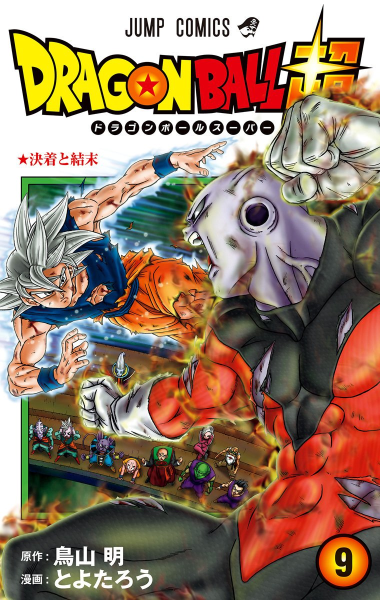

Lo Sport
Una delle mie più grandi passioni è lo sport. Mi tiene in forma, mi dà energia e mi aiuta a concentrarmi.


Lo sport che pratico è il CrossFit. Mi sono approcciato a questa disciplina all'età di 15 anni e fin da subito mi ha invogliato a continuare per migliorare il mio livello di fitness.
Attraverso l'allenamento sto migliorando giorno dopo giorno sia a livello di skills, sia a livello fisico.
Film, Anime e VideoGames
Per rilassarmi alla fine di una giornata, mi rilasso guardando dei film o delle serie tv. Di solito sono attratto dai generi horror e azione/comici.


Da quando sono piccolo ho sempre guardato anime, e in particolare quelli a cui mi sono affezionato di più sono DragonBall e Naruto. Entrambi mi hanno insegnato varie cose riguardo agli aspetti della vita e uno di questi è il non mollare mai.
Un aspetto importante della mia vita sono stati i Video Games con cui mi sono sempre divertito giocando sia con gli amici che da solo. Ho giocato a vari videogiochi e i migliori per me sono gli sparatutto, tra i quali uno dei miei preferiti è Fortnite.